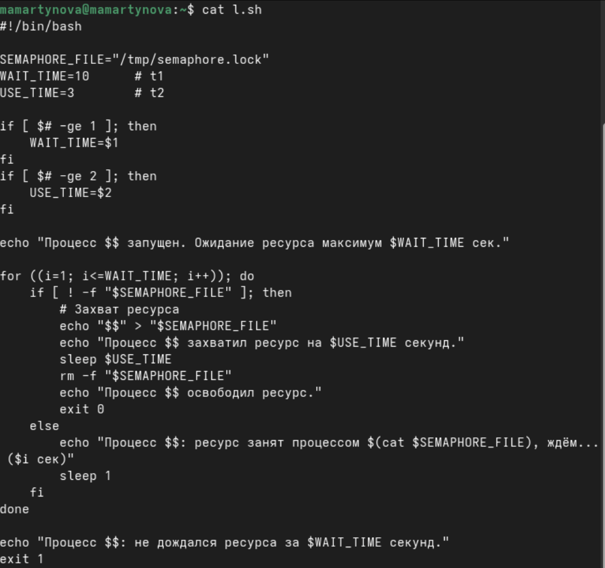
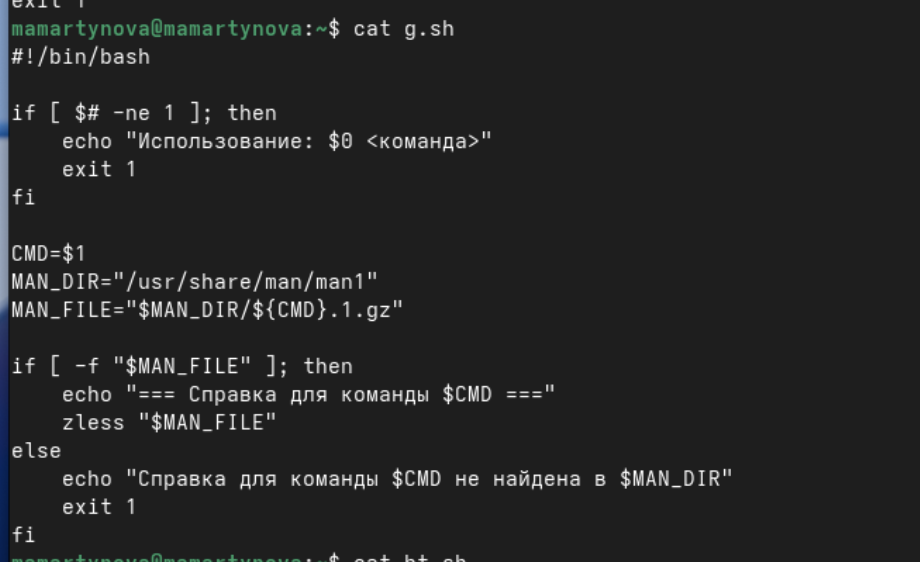
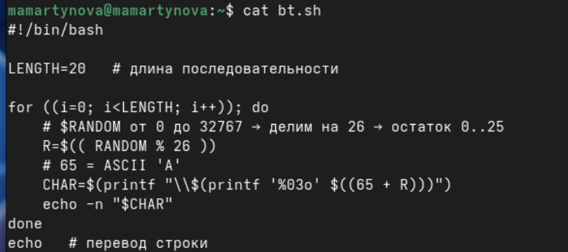

Изучить основы программирования в оболочке ОС UNIX. Научиться писать
более сложные командные файлы с использованием логических управляющих
конструкций и циклов.
2. Задание
Написать командный файл, реализующий упрощённый механизм семафоров.
Ко- мандный файл должен в течение некоторого времени t1 дожидаться
освобождения ресурса, выдавая об этом сообщение, а дождавшись его
освобождения, использовать его в течение некоторого времени
t2<>t1, также выдавая информацию о том, что ресурс используется
соответствующим командным файлом (процессом). Запустить командный файл в
одном виртуальном терминале в фоновом режиме, перенаправив его вывод в
другой (> /dev/tty#, где # — номер терминала куда перенаправляется
вывод), в котором также запущен этот файл, но не фоновом, а в
привилегированном режиме. Доработать программу так, чтобы имелась
возможность взаимодействия трёх и более процессов.
Реализовать команду man с помощью командного файла. Изучите
содержимое ката- лога /usr/share/man/man1. В нем находятся архивы
текстовых файлов, содержащих справку по большинству установленных в
системе программ и команд. Каждый архив можно открыть командой less
сразу же просмотрев содержимое справки. Командный файл должен получать в
виде аргумента командной строки название команды и в виде результата
выдавать справку об этой команде или сообщение об отсутствии справки,
если соответствующего файла нет в каталоге man1.
Используя встроенную переменную $RANDOM, напишите командный файл,
генерирую- щий случайную последовательность букв латинского алфавита.
Учтите, что $RANDOM выдаёт псевдослучайные числа в диапазоне от 0 до
32767.
3. Теоретическое введение
Командный процессор (командная оболочка, интерпретатор команд shell)
— это про- грамма, позволяющая пользователю взаимодействовать с
операционной системой компьютера. В операционных системах типа
UNIX/Linux наиболее часто используются следующие реализации командных
оболочек: – оболочка Борна (Bourne shell или sh) — стандартная командная
оболочка UNIX/Linux, содержащая базовый, но при этом полный набор
функций; – С-оболочка (или csh) — надстройка на оболочкой Борна,
использующая С-подобный синтаксис команд с возможностью сохранения
истории выполнения команд; – оболочка Корна (или ksh) — напоминает
оболочку С, но операторы управления програм- мой совместимы с
операторами оболочки Борна; – BASH — сокращение от Bourne Again Shell
(опять оболочка Борна), в основе своей сов- мещает свойства оболочек С и
Корна (разработка компании Free Software Foundation).
POSIX (Portable Operating System Interface for Computer Environments)
— набор стандартов описания интерфейсов взаимодействия операционной
системы и прикладных программ. Стандарты POSIX разработаны комитетом
IEEE (Institute of Electrical and Electronics Engineers) для обеспечения
совместимости различных UNIX/Linux-подобных опера- ционных систем и
переносимости прикладных программ на уровне исходного кода.
POSIX-совместимые оболочки разработаны на базе оболочки Корна.
4. Выполнение лабораторной
работы
Написать командный файл, реализующий упрощённый механизм семафоров.
Ко- мандный файл должен в течение некоторого времени t1 дожидаться
освобождения ресурса, выдавая об этом сообщение, а дождавшись его
освобождения, использовать его в течение некоторого времени
t2<>t1, также выдавая информацию о том, что ресурс используется
соответствующим командным файлом (процессом). Запустить командный файл в
одном виртуальном терминале в фоновом режиме, перенаправив его вывод в
другой (> /dev/tty#, где # — номер терминала куда перенаправляется
вывод), в котором также запущен этот файл, но не фоновом, а в
привилегированном режиме. Доработать программу так, чтобы имелась
возможность взаимодействия трёх и более процессов.(рис. 1)

Первый скрипт
Реализовать команду man с помощью командного файла. Изучите
содержимое ката- лога /usr/share/man/man1. В нем находятся архивы
текстовых файлов, содержащих справку по большинству установленных в
системе программ и команд. Каждый архив можно открыть командой less
сразу же просмотрев содержимое справки. Командный файл должен получать в
виде аргумента командной строки название команды и в виде результата
выдавать справку об этой команде или сообщение об отсутствии справки,
если соответствующего файла нет в каталоге man1.(рис. 2)

Второй скрипт
Используя встроенную переменную $RANDOM, напишите командный файл,
генерирую- щий случайную последовательность букв латинского алфавита.
Учтите, что $RANDOM выдаёт псевдослучайные числа в диапазоне от 0 до
32767. (рис. 3)

Третий скрипт
5. Выводы
Мы изучили основы программирования в оболочке ОС UNIX. Научились
писать более сложные командные файлы с использованием логических
управляющих конструкций и циклов